01 Introduction & Objectifs
En mécanique, la fiabilité et la longévité des structures constituent des enjeux majeurs, en particulier lorsqu'elles sont soumises à des sollicitations cycliques. Ces chargements répétés engendrent le phénomène de fatigue des matériaux, qui se manifeste en trois étapes successives :
Ce projet porte sur le levier d'une bride de serrage soumis à des charges cycliques importantes en usinage. L'objectif est d'évaluer la durée de vie, localiser les zones critiques d'amorçage et proposer une optimisation géométrique via ANSYS.
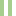
02 Étapes de résolution sur ANSYS
Création d'une analyse de structure statique dans l'atelier Mechanical Workbench.
Import du fichier levier.stp depuis SolidWorks / CATIA.
Matériau : Acier standard — E = 2×10¹¹ Pa, ν = 0,3.
Support fixe : surface cylindrique du trou d'encastrement de la chape.
Charge appliquée : pression de 2,5 MPa sur la surface de contact (S = 942,49 mm², R = 10 mm) — identifiée depuis l'assemblage CATIA/SolidWorks.
Maillage adaptatif non uniforme, résolution de niveau 7. Raffinement local autour du trou et des changements de section.
Calcul contrainte Von Mises, contraintes principales max/min/vectorielle, et analyse de fatigue (outil Fatigue ANSYS).
03 Évaluation des contraintes et vecteurs principaux
Le pic se localise au point d'appui — contact cylindrique de très faible surface (2 mm). La contrainte reste très en deçà de la limite élastique du matériau (250 MPa).
Comportement typique en flexion — alternance traction / compression. Deux zones critiques :
- Changement de section — concentration de contraintes liée à la géométrie.
- Bord du trou — effet d'entaille, gradient élevé → site d'amorçage de fissures.
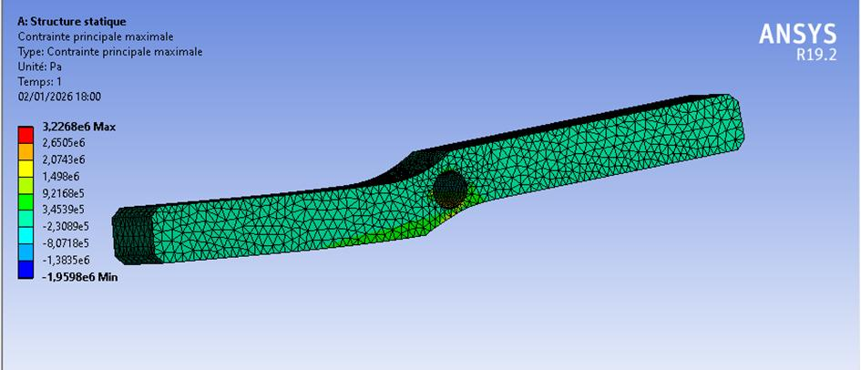
La face opposée travaille en compression, confirmant le mode de flexion pure. Contrainte normale aussi élevée au niveau de la surface d'appui fixe — susceptible de générer des fissures.
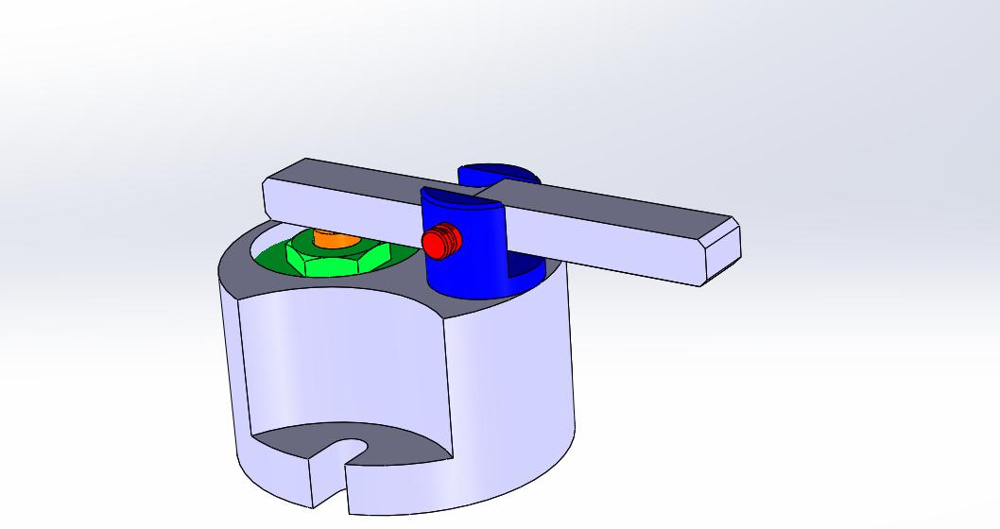
Contrainte normale élevée au niveau de la surface cylindrique d'appui fixe — susceptible de générer des fissures dans cette zone.
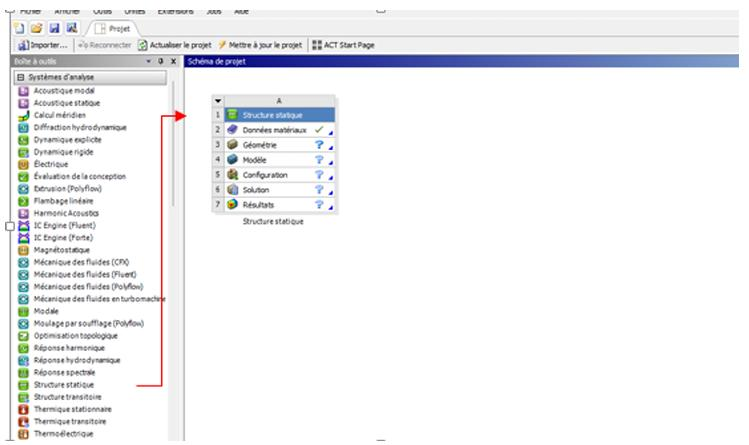
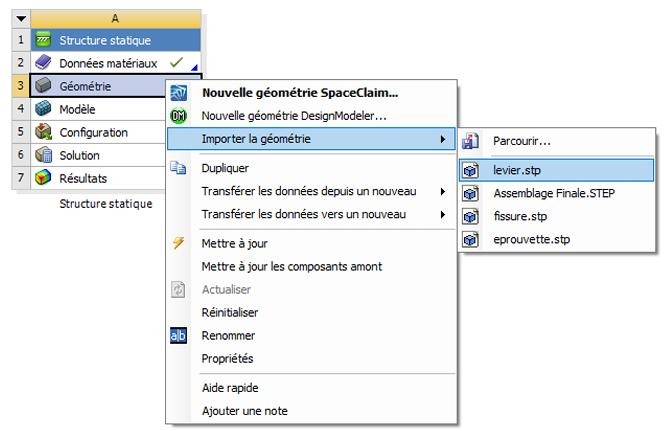
04 Analyse de la tenue en fatigue
Le cycle de chargement est alterné traction-compression. Le critère retenu est Soderberg (le plus conservateur) — il limite la contrainte admissible selon la limite d'endurance et la limite d'élasticité.
Relation linéaire entre contrainte alternée, contrainte moyenne, limite de fatigue et résistance ultime.
Relation parabolique, moins conservateur que Goodman.
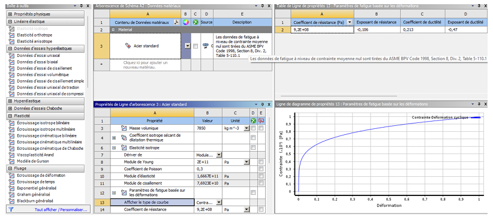
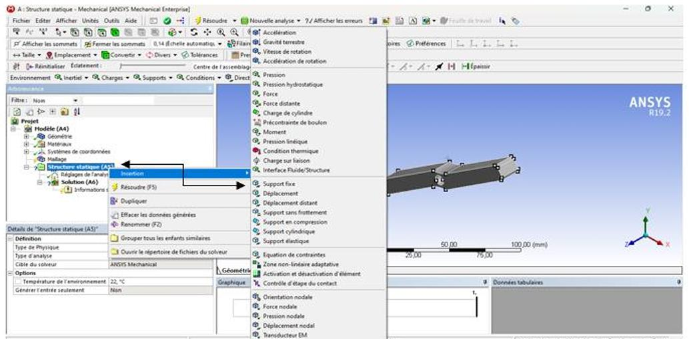
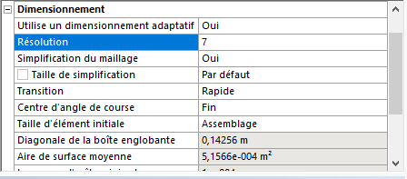
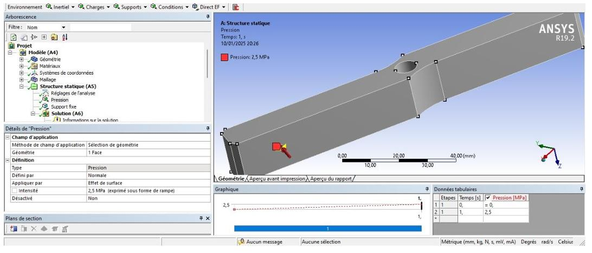
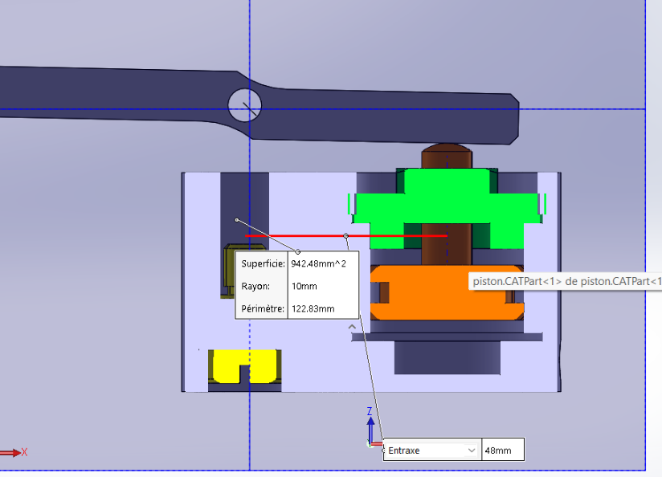
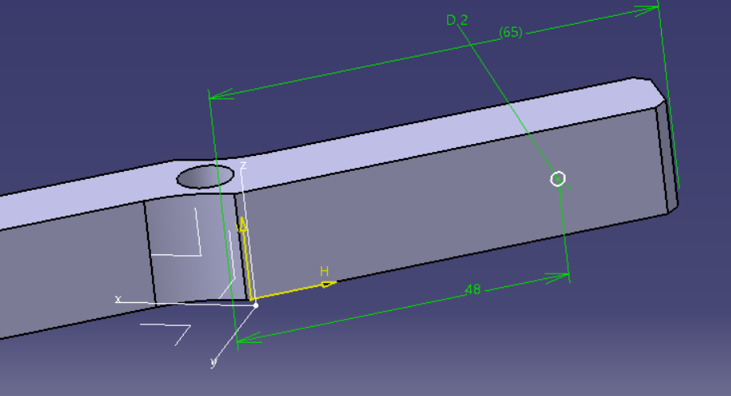
05 Optimisation géométrique
La géométrie initiale est fortement surdimensionnée (CS = 15). Une réduction significative de matière a été réalisée tout en maintenant les exigences de tenue en fatigue.
Le CS minimal de 3,2 est localisé au bord du trou central et à la zone de changement de section. La durée de vie reste infinie (≥ 10&sup6; cycles). La réduction de matière n'a pas compromis la tenue en fatigue.
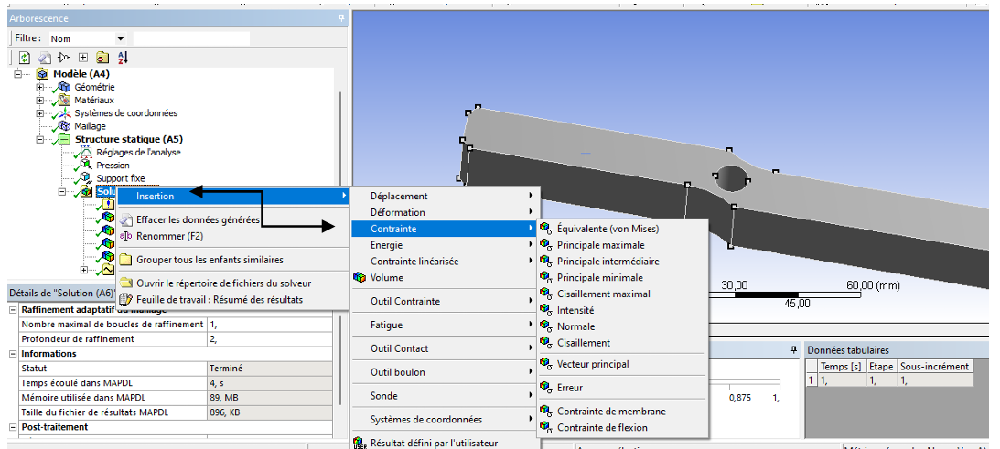
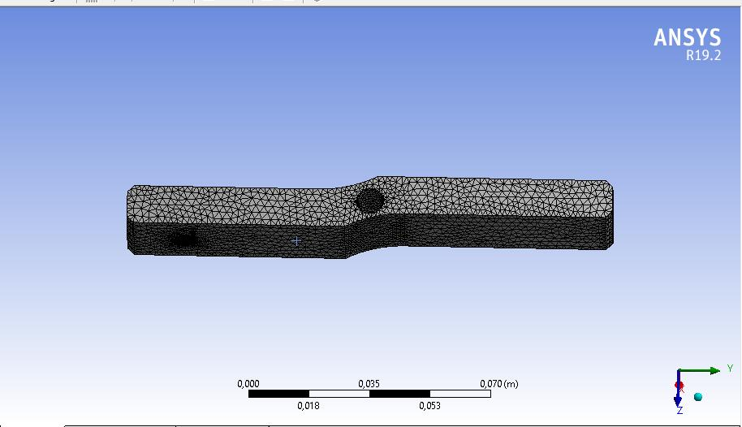
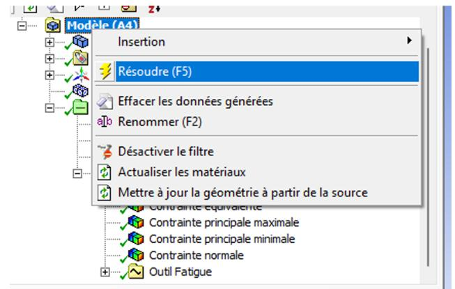
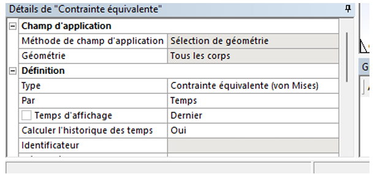
06 Mécanique de Rupture
Pour identifier les sites d'amorçage, la pression est portée à 60 MPa (600 bar) — valeur restant dans le domaine élastique (σe = 250 MPa). Cette approche exacerbe les concentrations locales sans modifier le comportement global.
- Site critique : Bord du trou central (surface extérieure, côté traction)
- Type : Fissure semi-elliptique radiale — Mode I
- Orientation : ⊥ à la contrainte principale maximale
- Kt ≈ 3 pour un trou circulaire
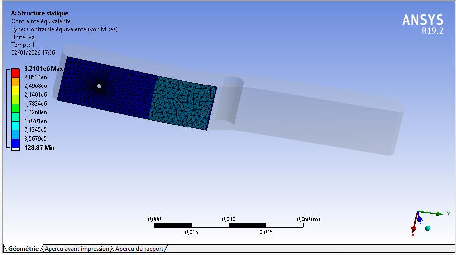
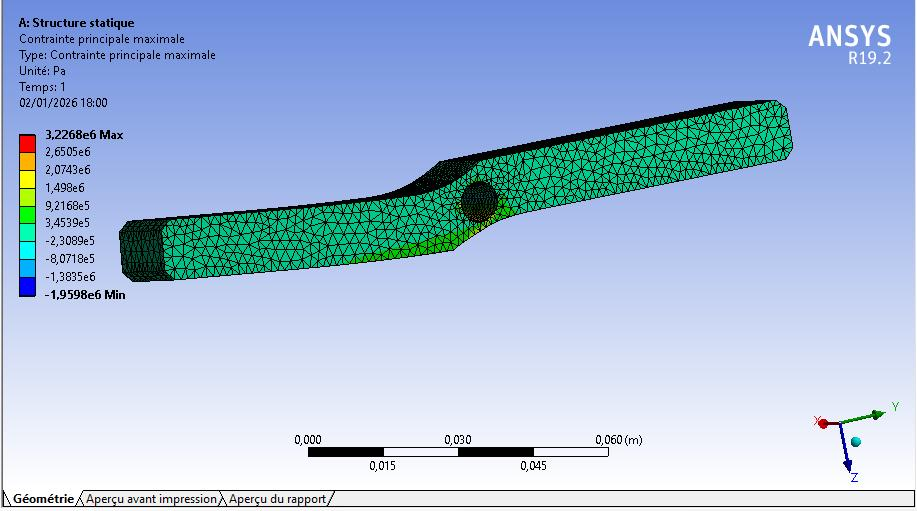
07 Conclusions
Cette étude a combiné analyses théoriques et simulations ANSYS pour évaluer la durabilité du levier de bride. Résultats clés :
- ✦La tenue statique est validée — coefficient de sécurité initial de 15 (pièce surdimensionnée).
- ✦La durée de vie en fatigue est infinie (≥ 10&sup6; cycles), y compris après optimisation.
- ✦L'optimisation géométrique réduit le CS à 3,2 (seuil requis : 2) avec une utilisation plus efficace de la matière.
- ✦En mécanique de la rupture, une fissure ≥ 0,2 mm se propage sous 600 bar, mais la rupture brutale nécessiterait ~50 mm.
- ✦Zones critiques à surveiller : bord du trou central et changement de section.
Remerciements sincères à M. KHATIB pour son encadrement attentif et la clarté de ses enseignements.